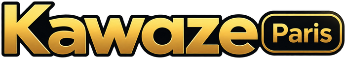

Worlds 2026
Cagnotte offerte sur chaque match. Paris ouverts jusqu'à 5 min après le coup d'envoi, cash out jusqu'à 10 min.
Chargement…
Les 20 plus gros portefeuilles de la commu.
Les matchs des Worlds arrivent tout seuls depuis lolesports. Tu peux aussi en ajouter à la main et régler un match toi-même.